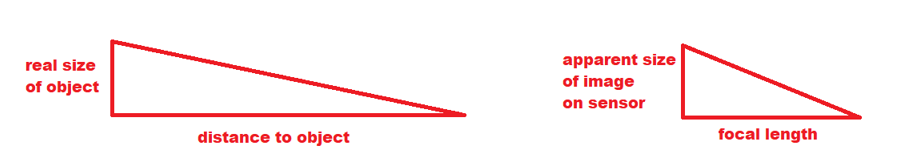
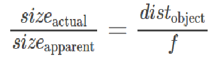
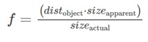
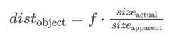
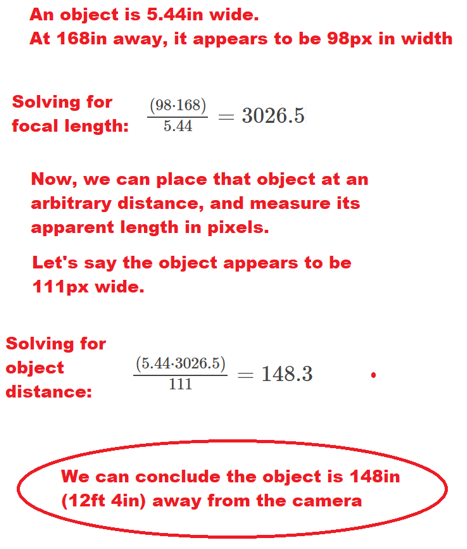

Here I will answer the questions of:
Depth Estimation is a computer vision task which allows you to programatically estimate distances / sizes of objects in your field of view.
In the robomaster competition, being able to perceive distance is extremely beneficial. For the fully-autonomous sentry, you must account for bullet drop if firing a long distance, which is only achievable if you know how far away your target actually is.
There are numerous approaches to this. One way is by using perspective-n-point, which estimates the pose (position, distance, etc.) between an object and the camera. This method can be very accurate with proper calibrations.
However, a much more mathematically-simple approach can also be used.
Take a look at a diagram of a camera’s focal length:
While it may not be immediately clear, you can actually model this situation using similar triangles, one composed of the person’s height, their distance to the camera, and the angle of view, and the other triangle composed of the person’s apparent height on the sensor, the camera’s focal length, and the angle of view:

From here, a pretty neat realization can be made.
if you know the real size of an object, the camera’s focal length, and the object’s apparent size (in pixels) in the image, you can calculate how far away the object is!
Via similar triangles:

We then need to find the camera’s focal length in pixels, which we can calculate in a series of trials. Simply place an object of known size a known distance from the camera, and use this formula:

Then using this known focal length, we can solve for any object’s distance from the camera:

Here’s an example of the process:

Here’s two videos of this depth estimation in action: